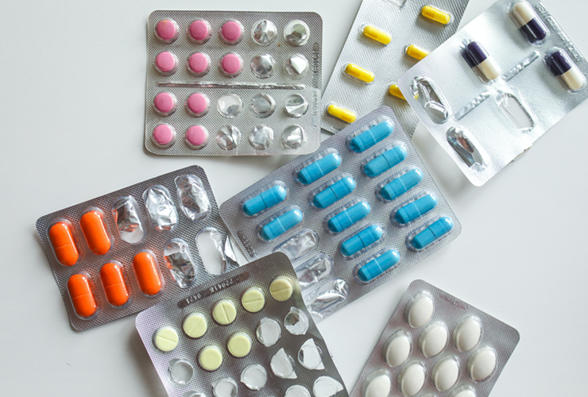
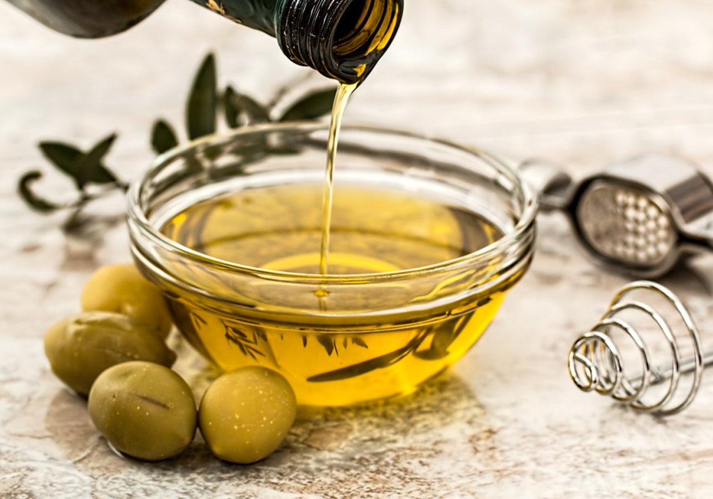
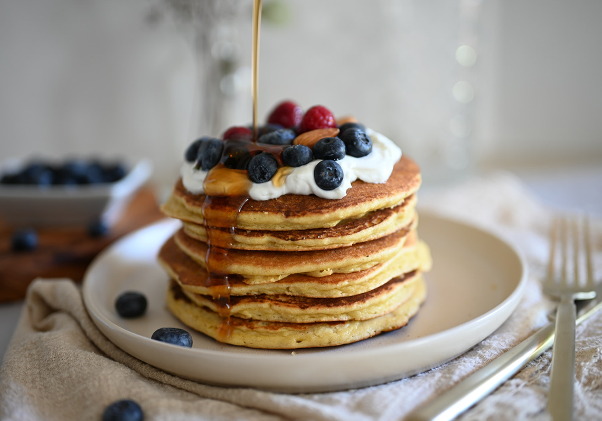

目前羅氏鮮已在台灣全面上市，無論是台北、台中、台南、新北、高雄、桃園等地區的各大藥局、便利店都能夠買到。羅氏鮮減肥藥是一種健康的排油瘦身產品，不僅瘦身且還可以降低反彈的概率。
羅氏鮮的主要成分是奧司利他，就是瘋狂炒作的“排油丸”。近幾年來，各種類型的排油產品，如排油減肥丸、排油減肥茶、排油減肥藥……迅速氾濫！
「羅氏鮮」優勢：安全性高副作用少

羅氏鮮(Xenical)是目前唯一臨床上被證實會排油的產品，安全性已得到驗證，副作用少，源自歐洲原裝進口，原廠正品保證。根據醫院的臨床試驗報告，羅氏鮮的作用在於抑制脂肪的吸收，阻斷油脂的吸收，可減去體重的百分之五到十左右，受試者平均半年內可以減三到四公斤。
體內脂肪可以通過排便排出體外嗎？
有很多人認為脂肪會變成汗水流出體外，所以運動過程中，每次看到自己濕漉漉的，就自豪的以為“我的脂肪在燃燒！”還有人會覺得拉出了油脂，就是體內的脂肪被排出了體外！但是！脂肪絕大多數是由呼吸排出的二氧化碳消耗的。新南威爾士的兩位科學家在世界五大醫學期刊之一的《英國醫學期刊》上發表的文章表明，人體脂肪的消耗產物84%由呼吸排出，15%由汗液排出。所以說，排油丸並不能排出體內脂肪。

那排油，排出來的到底是什麼油？
排油丸並沒有將我們身上現有的脂肪轉換成油脂排出體外的能力，它是阻止你吸收外來的油脂。羅氏鮮的主要成分—“奧利司他” 其實是一種 “脂肪酶抑製劑”。它在胃腸道中負責抑制酶的活性，由此食物中的油脂便不能在消化道中被吸收，轉而從菊花直接排出體外。所以，它的作用是阻斷膳食脂肪被人體吸收！
吃了排油丸就不用擔心變胖？
事實上讓我們發胖的真正原因：不是吃了脂肪，而是吃了精緻碳水化合物和糖，是糖讓我們變胖！吃脂肪≠長脂肪讓我們發胖的並不是脂肪，而是碳水化合物，因為當攝入過多碳水化合物時，便打開了存儲脂肪的開關--胰島素。胰島素除了幫我們降血糖外，還會順便幫我們將攝入的熱量囤積為脂肪。如果不打開這個開關，吃再多也只會被身體消耗掉，而不是存儲起來。就算阻斷了脂肪的吸收，當我們吃進大量的碳水化合物和糖，存儲脂肪的開關還是會被打開。只是在阻斷脂肪後，囤熱量的時候少了脂肪這麼一點點，但我們吃進去的碳水和蛋白質的熱量還是會被囤為脂肪，我們該胖還是會胖的！

儘管可使腸胃無法吸收飲食中的脂肪，減少熱量攝取，但還是須同時配合低油、低熱量的飲食，及運動控制，才能達到理想減重效果。
總結
即使你服用了減肥藥，也要確保努力運動的同時，改善飲食習慣，培養一種健康的生活方式。減肥藥不能確保你減肥成功，只能是一種輔助的工具。最後希望大家都能成減重，保持完美身材。